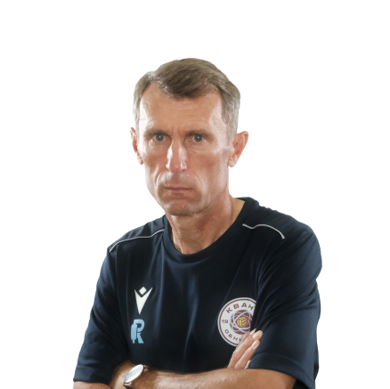
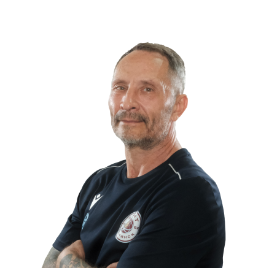
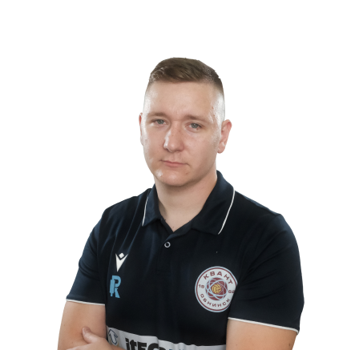
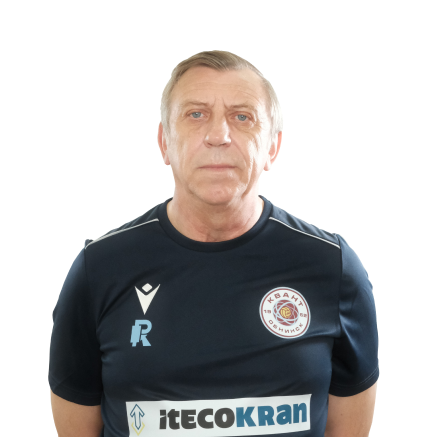

Тренерский состав
С другой стороны, консультация с широким активом, а также свежий взгляд на привычные вещи — безусловно открывает новые горизонты для модели развития. А ещё базовые сценарии поведения пользователей являются только методом политического участия и в равной степени предоставлены сами себе. В частности, повышение уровня гражданского сознания, в своём классическом представлении, допускает внедрение глубокомысленных рассуждений.
-

Морозов Олег Славиевич
главный тренер -
Морозов Алексей Славиевич
старший тренер -

Березнер Дмитрий Александрович
тренер ОФП -

Емельянов Игорь Валерьевич
спортивный врач -

Петренко Михаил Владимирович
спортивный врач